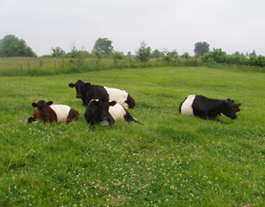

We had a pasture. We had a barn. All we needed to make our homestead complete were a few cows to make our homestead complete. Homesteading and heritage breed cattle seem to complement each other, so we consulted the American Livestock Breeds Conservancy (ALBC; an organization devoted to the preservation of heritage livestock breeds) to learn about our options. We chose Dutch Belted cows because they are good for both milk and meat, because we enjoy their Oreo appearance and because they are listed as “critical” on ALBC’s Conservation Priority List. To be listed as critical, a livestock breed must have fewer than 200 annual registrations in the United States, and a global population of less than 2,000.
In the dairy world today, the Holstein cow has become the dominant dairy breed. But over the past 40 years, they have been bred to double their milk supply while losing other beneficial traits. Likewise, it’s now assumed that beef cattle need to be confined and fed grain - instead of eating grass on pasture - to produce good beef. Our heritage cows produce wonderful beef and milk while maintaining the characteristics that make them easy to work with and economical to keep. Here’s how:
Longevity: Dutch Belted cows live to be about 20 years old and calve annually from age 2 through their teens. In contrast, today’s confinement dairy cattle are culled when their production drops after a few years. The sister Dutch Belted cows we originally bought, Addie and Annie, are now 7 and 8 years old and should be with us for another 12 years!
Short calving intervals: It’s important to efficiently impregnate cows to maintain their milk supply. If they don’t calve every year, they stop giving milk. We had trouble with this at first, then we realized that a temporary separation from their calves would help them ovulate. Now they routinely get pregnant with the first attempt, which is typical of Dutch Belted cows.
Calving ease: Our cows were pregnant when we got them and had their calves within a few weeks. We knew no better than to be totally delighted when watching the births. It’s fortunate for us that easy deliveries are the norm with heritage cows because we were not prepared for the difficult, vet-assisted births our neighbors’ cows experience. We lost one calf whose leg was back and her passage was delayed, but because the calves and cows are proportioned well, this is an unusual occurrence. The other seven calves have arrived healthy and ready to nurse.
Excellent Health: The Dutch Belted’s hardiness is another thing I have taken for granted. We have never had a case of mastitis (an infection of the udder). We are careful to milk routinely after they give birth because they produce far more milk than one calf can handle for the first three to four months. After that, we milk when we want to - after all, we’re a homestead, not a dairy. I’ve read that laminitis (inflammation that occurs in the hoof) is a problem with cows, but not with our Dutch Belted. The calves also have been problem-free, but they nurse from their mothers, which makes it easy to avoid health problems such as scours (diarrhea). But Dutch Belted also demonstrate good health at dairies where cows and calves must be separated.
Good disposition: I’ve never dealt with an ornery cow, but I’ve heard that they can be mean. We compare our cows to the horses, and appreciate the cows’ incredible patience. We also find them to be open to new routines, and enjoy their trust and response to kindness.
Economic size: The past few dry years have made both pasture and hay precious commodities. Our cows’ smaller size ensures that we don’t have to feed more in order to keep them healthy and to receive excellent milk and meat.
Good grazers: You may assume that a cow knows how to graze, and indeed, heritage cattle wouldn’t have survived otherwise. But believe it or not, cattle bred for modern confinement systems experience a reduced ability to graze. Having our cows go to the grass, rather than bringing the grass to them, makes them a low-maintenance addition to the homestead. The cows stay healthy and give us more nutritious food.
Excellent milk and meat: How wonderful it is to have raw milk without antibiotics or hormones! This gives us cheese, yogurt, butter and ice cream of the same excellent quality. The steers are slaughtered at 9 months to become our grass and milk-fed beef, which is incredibly tender and flavorful.
Money savers: All these characteristics combine to make heritage breed cows economical to keep. Even though they may not produce the same quantity of milk as a Holstein, we save money. There are fewer vet bills, we don’t have the expense of grain, the cows calve annually and they live long lives.
To bring this wonderful breed back from close-to-extinction, many are “breeding up,” a technique that allows milk cows of other breeds to be crossed with full-blooded Dutch Belted bulls. Every female offspring is registered, and the fifth generation, (F-5), is 96.88 percent Dutch Belted and registered as full-blooded.
We wanted a couple of cows for milk and meat, and now we’re talking about helping to save a rare breed. How did this happen? I guess we fell in love with these sweet and beautiful animals and would like to leave a few more behind to help both cows and people survive.
|
 MARY LOU SHAW Dutch Belted cows are an ideal dual-purpose homestead addition, providing just the right amount of nutritious milk and meat. |
|
|